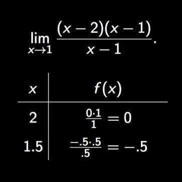

Limit Cancellation
When a function have a denominator, it means there is a V.A in that graph.
For example, the function in the image shows there is a undefined at x = 1, but in the limit you can cancel out the denominator and find where is f(1)
approaching
